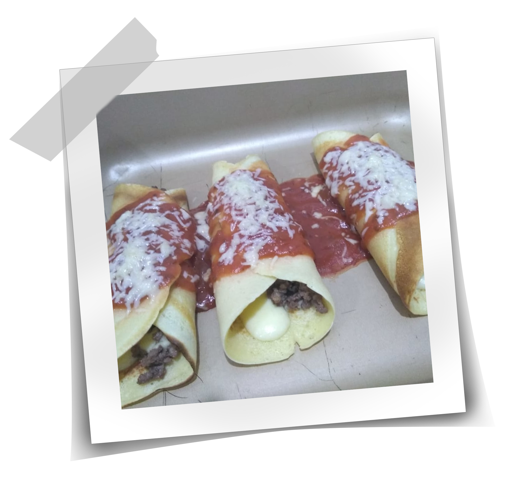

Nosso Livro de Receitas
Aqui você vai encontrar todas as nossas receitas preferidas!
(Em construção)

Panqueca

Ingredientes:
- 1 xícara de chá de leite;
- 2 ovos;
- 4 colheres de sopa de óleo;
- 1 colher de chá de sal;
- 1 1/2 xícara de farinha de trigo.
Modo de Preparo:
- Bata todos os ingredientes líquidos e o sal no liquidificador;
- Quando estiver homogêneo, acrescente a farinha aos poucos e bata mais;
- Pegue uma concha da mistura e despeje em uma frigideira média em fogo médio. Espalhe virando a frigideira para que fique uma massa fina;
- Quando um lado estiver dourado, vire e doure o outro;
- Sirva com molho e recheio de sua preferência.
<- Voltar